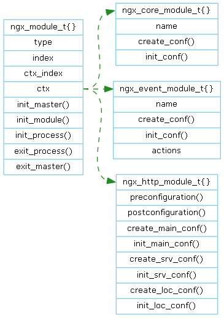
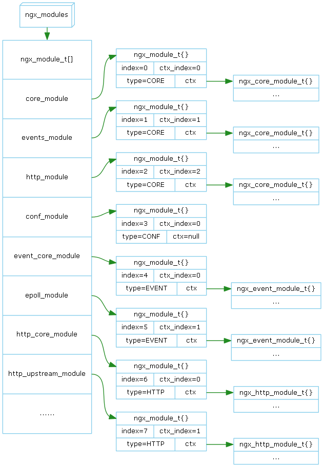

Nginx提供的功能都由模块来实现，和Apache不同Nginx的模块不能运行时安装，只能在编译时静态链接进入。
Nginx模块类型分为四类：

ngx_module_t 是一个公共的结构体，每个模块都有它的一个实例(全局变量)。但是四类模块又有自已特有的属性，于是在ngx_module_t开发了一个ctx指针指向各类模块特有的数据结构。

在 objs/ngx_modules.c 文件中定义了全局数组变量 ngx_modules[]，所有的模块都被auto/modules添加到了这个数组中。
在 init_master()/init_module()/init_process() 等回调函数中，注册业务回调函数，在业务回调函数中处理业务。
参见Nginx HTTP Core / External Phase Handler Module
参见Nginx HTTP Core / External Filter Module
https://github.com/lingjf/nginx_analyse/tree/master/prototype/nginx_configure
Prototype删除了和进程模型不相关的功能，以及出错处理等代码。
https://github.com/lingjf/nginx_analyse/tree/master/doc/05CN_Nginx_Module_Model.html
Ling Jianfa lingjf@gmail.com https://github.com/lingjf